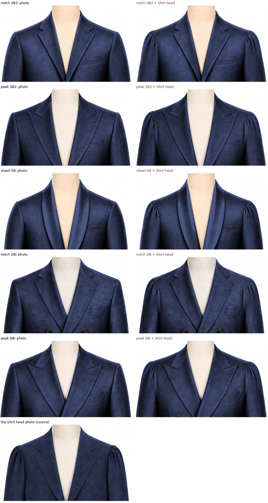
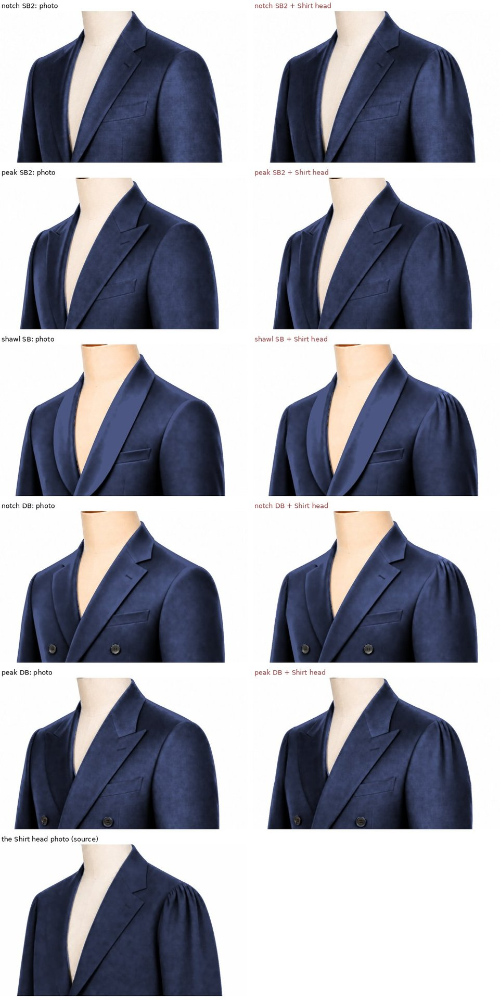
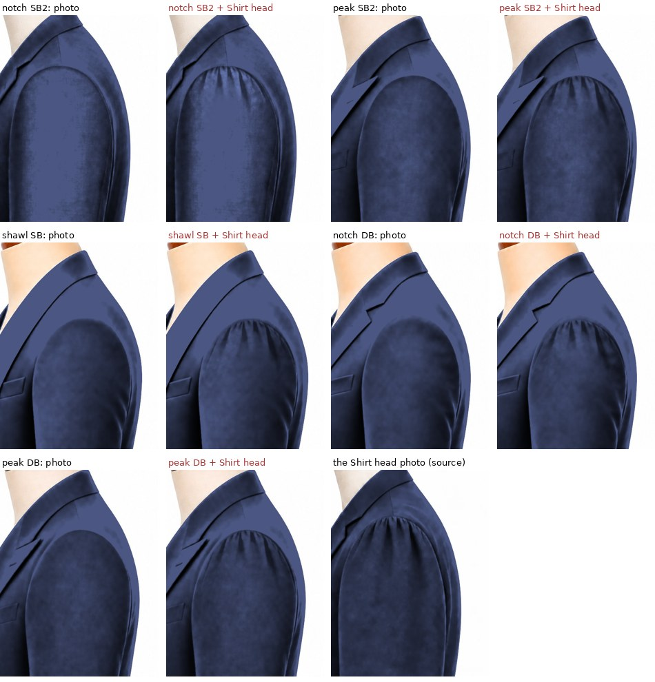
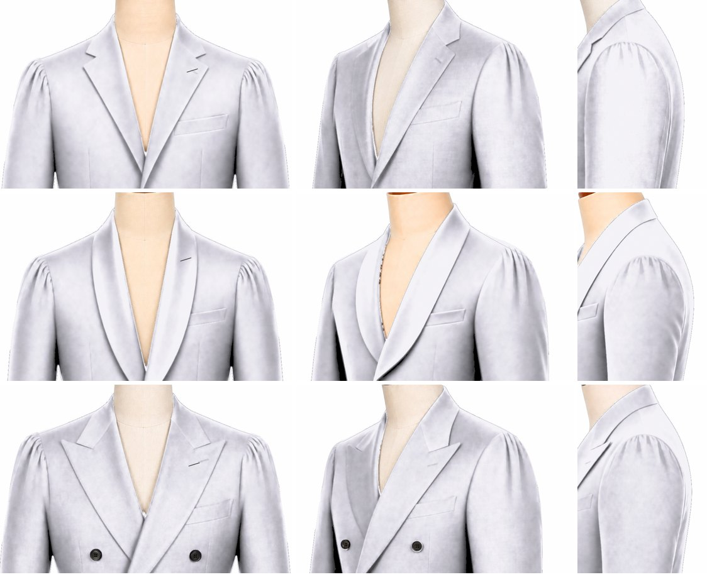
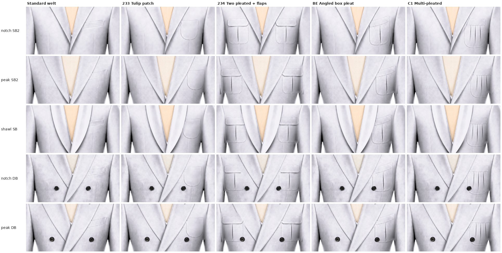
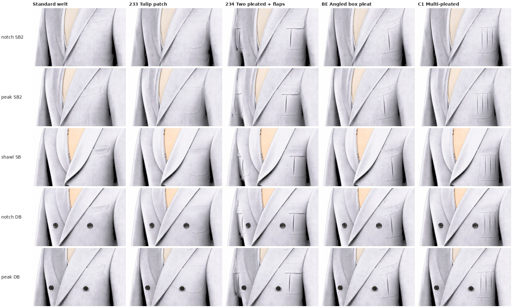
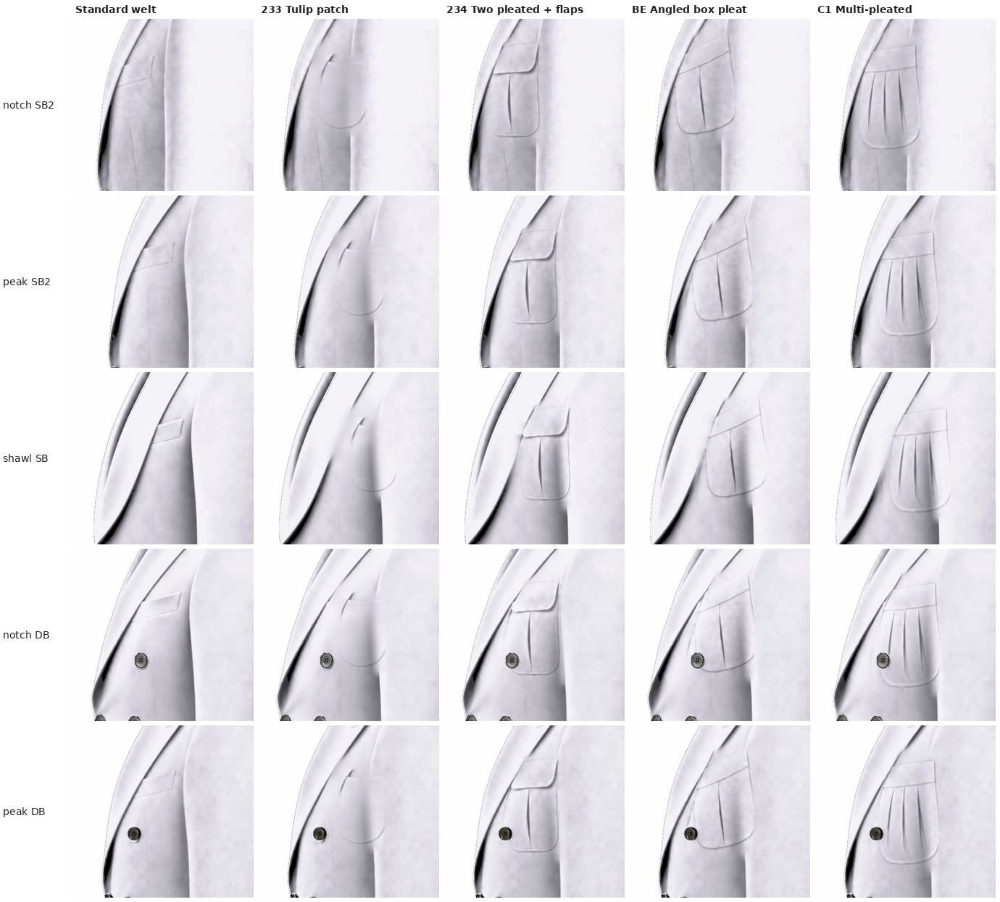

Your 15 photos, laid onto the designer's jackets
Review sheets only. Nothing has gone into the designer yet, neither the preview link nor the live one. Tap any picture to open it full size.
Part 1: Shirt head (E), Front, Three-quarter and Side
Your shirt-head photo of each angle, laid onto the five main jackets the same way as Natural, Con rollino and Neapolitan. Left: the jacket's own photo. Right: the same jacket with the shirt head. The last picture on each sheet is your photo.



Side: your side photo has the sleeve drawn a little wider and darker than the designer's side photos, so only its gathers are carried over: they start at each jacket's own sleeve seam, and the jacket keeps its own sleeve and light.
Every jacket in the designer with the shirt head



Part 2: Chest pockets 233, 234, BE, C1
Drawn by the designer itself, on a light grey cloth so the pocket lines are easy to see. Columns: the standard welt, then your four pockets. Rows: notch and peak single-breasted, shawl, notch and peak double-breasted. Each pocket is moved to where that jacket's own welt sits, and the welt is removed.



What to look at
- 234 has a pocket on each side of the chest, as in your photo. On wider lapels (peak, shawl, double-breasted) the lapel lies over part of the pocket, and the far pocket in Three-quarter is partly hidden behind the far lapel.
- Only the pockets' own lines are taken from your photos (seams, pleats, flap shadow); the cloth and light around them stay the jacket's own, so no patch edge shows on any cloth.
- Side 233: your side photo of this one is a separate shot (the lapel stands a little off the chest), so this pocket reads lighter than the other three in Side.
- Side, double-breasted: the top button falls on the pocket's front edge, as these pockets are deeper than the welt.
Tell me which sheets are good and what to change. Once you approve, I put them on the preview link for your phone check, and only then live.